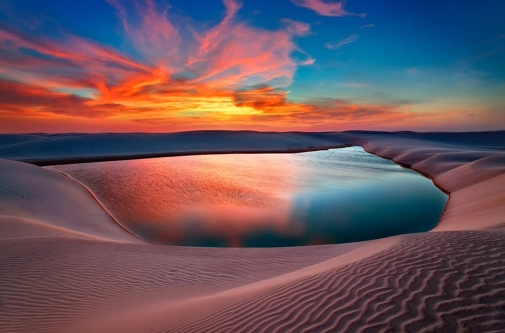

Meu Maranhão
O Maranhão é um estado brasileiro situado na região Nordeste do Brasil. O seu território foi objeto de disputa entre diversos povos europeus, sendo que os portugueses mantiveram o domínio da região. A cultura maranhense é resultado da influência das populações que ocuparam o estado ao longo da sua colonização. A sua capital, São Luís, possui um centro histórico muito conservado. A população maranhense está concentrada no litoral e nas cidades médias do interior do estado